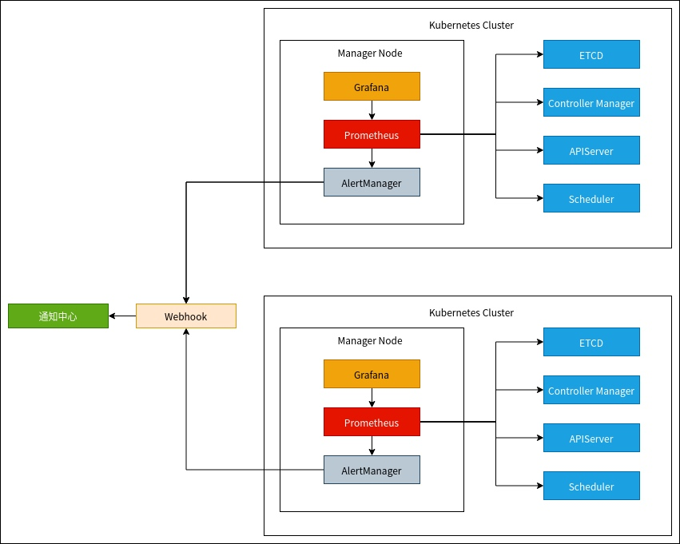
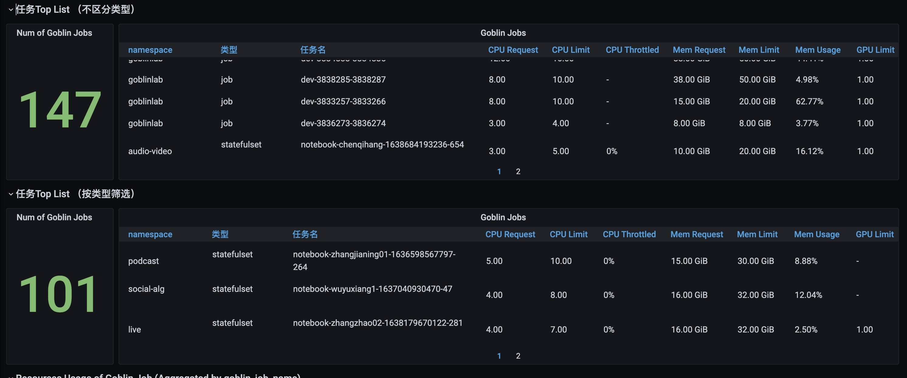
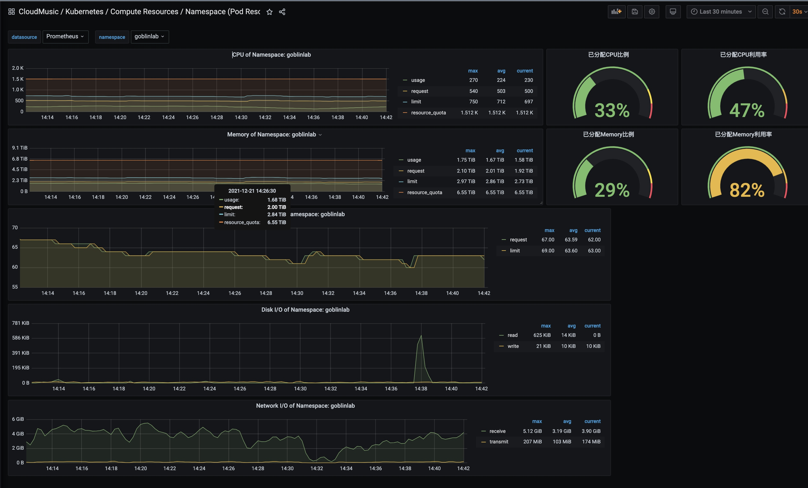

机器学习平台在云音乐的持续实践
0 刀耕火种的日子

19年3月，当时刚来云音乐，本来是在大规模机器学习上，去落地一些业务，但是发现，机器学习基础设施的暴力与原始，几乎把我一波送走：
- 若干台物理机登录， 每一个业务团队分配若干台物理机，基础环境、机器学习框架都需要业务团队自己负责；
- 没有开发调度的区别， 任务开发完成后，手动在环境里的任务crontab上去更改，调度起任务；
- 几乎没有任务监控的能力，很多时候我们去溯源一些运行的任务时，发现很多任务大半年没有在运行了，业务团队也不清楚；
- 对新人极其不友好， 没有统一培训新人的标准，同一个团队内也没办法建立好标准；
- 业务算法改造意愿不强，因为并没有特别好的替代品；
- 因为没有基建标准的缘故，各个团队去发布模型也不一致，有的团队，通过内部git进行发版来更新，也有拷贝到线上集群的指定路径，不可能管理起来，也没有办法保证模型服务更新成功的质量；
基于这些致命的问题， 我们判断，如果再不做改变，必然会影响后续业务的发展。但改变很多时候，在一些公司，或者在一些公司的某些个阶段本身就是一件很难的事情。
1 先干吧
尽管问题我们都清楚， 刀耕火种的日子应该早点摒弃，我们应该尽早脱离这种状态。但是云音乐是一个以业务为主导的公司， 很难提前投入相关的人力去做这样短期内没办法看到好处的工作。很多业务为主导的公司， 后者说前期在业务增长的公司， 在技术架构层面上，遇到问题时，会习惯性地先找出一些取巧的解法去规避他，直到无法规避时，才会从技术架构体系上去优化。所以， 老板的一句话就是“先干吧”，虽然对我们来说，并没有实际的支持， 人力也未到位，业务也不配合， 可能只有一句口号”技术体系建设“。 我们几个小伙伴却憋着气，想做一些有意思的东西。
2 团结一切可以团结的力量
老板一句”先干吧“， 团队几个小伙伴，憋着气想要做出改变当时境况的东西，但是”理想丰满
、现实骨干“。当时，团队连我在内只有3个人力， 还各个背景不同，有算法出身、做过一些分布式框架的我， 有负责模型服务开发的，有纯做后台开发的，就是没有系统化研究过机器学习平台的。
所幸，当时网易内部有一些相关机器学习团队，我们进行了亲切友好地交流（纯偷师）。其中，我印象最深地就是伏羲实验室赵增负责的丹炉，支撑了整个伏羲的机器学习业务，包括后来在游戏上深耕的超大规模强化学习的应用。 虽然，丹炉支撑的业务和云音乐的业务千差万别， 但是从架构体系来说，丹炉可以说是早期云音乐Goblin机器学习平台的老师。在我们一穷二白，完全没有上路的时候，给了我们方向：ML Infra base K8S。
然后，我们找了云计算的新勇，期望他们帮我们改造我们的资源管理、调度能力，给我们培训到底k8s是啥、kubeflow是啥、那些机器学习场景下的operator又是啥。 新勇是一个很nice的同事， 我印象中，当时由于GPU主机还是以物理机的形式， 我们可操作GPU主机好像只有三台。在这三台主机上，新勇团队帮我们搭起最简单的k8s集群，然后我们又攒了10多台大数据集群淘汰下来已经过保的CPU机器，找了王盼负责的存储团队，帮我们搭了一个ceph集群。
至此，我们终于第一次以容器化集群的形式，管理起来我们的存储与计算资源，可以开始开发了。
3 解决什么问题
在开始说要干机器学习平台之前，其实之前就有一个版本， 后来我们同学在公司内分享，称作为”石器时代“。大概就是一个平台，支持一些组件的拖拉，然后组件内通过java开发，构建DAG，完成相应的功能。从开发完成，发布到之后的几个月，用户量为0。后来我们开始干之前，前面也提到和各个机器学习团队有过深入地交流，我们摒弃了之前花式的拖曳与低代码逻辑， 确定了当时机器学习平台需要解决的核心问题：
- 开发模型过程中遇到的环境、数据链路、开发便利性问题；
- 如何将开发环境中完成的模型任务，高效、简单地调度起来，解决包括基础依赖、日志、重跑等核心问题；
针对问题1，以往物理机开发的模式极其暴力， 每个人在自己的目录上安装环境，或者通过anaconda的虚拟化环境来支持，但是在一些公共的工具体系，比如大数据环境上，很容易出现问题，而有了Docker之后，变得不再是问题。我们将大数据工具比如hadoop、spark环境，Python开发环境Anaconda、JupyterLab，常见的机器学习框架如TensorFlow、PyTorch，以及SSH这种基础的服务，打包到若干个基础镜像。虽说是基础镜像，但是有过机器学习镜像打包经历的人，应该知道是一个什么样的体验，随便一个包含上面我提到的环境的TensorFlow某个版本的基础镜像就到了10多GB。我记得当时至少在两周内， 我和军正的电脑一刻不停的打镜像，解决各种比如安装配置命令有错，没办法访问墙外的资源等等非技术问题，每天风扇呼呼响，打包一个push一个，然后删除，继续打包下一个，有的时候打包时间过长，就把电脑放到公司，等第二天来看。以至于后来，我们都强烈的在Goblin上增加一个commit的功能，去让用户把容器内部的变更固化到镜像中，减少他们来找我们打基础镜像的需求。
本地IDE远程开发
web vscode
JupyterLab
针对问题2，我们的选择是统一化存储、任务流、与容器化组件。其中统一化存储是基础，通过分配给用户对应的pvc卷，来打通任务开发与调度之间的gap，开发环境写好的代码文件，仅需要在调度环境中配置相同的pvc卷，即可调度、访问。容器化组件是没有任务附加逻辑的，他的功能仅仅是向资源池申请指定的资源，然后按配置好的镜像拉动启动的文件，最后，运行配置好的启动文件；而任务流支持和其他功能组件联动，比如对接外部系统的模型推送、多个容器化组件的编排。
4 把业务的机器全卷走
基础功能完成后，经过一段时间的测试， 评估基本上没有啥问题。 我们开始逐步安利业务老大们把任务迁移起来。但是节奏还不能太快。 这个时候，我们只有3个正式人力，3台GPU主机。
一步一步来， 但是现实依然残酷，没有一个业务团队配合，不管如何安利，如何保证。直到音视频实验室小伙伴来找我们借显卡，这里要提一个很有意思的历史背景：当时数据智能部创立之初，我还没有来时，就买了一批显卡，还蛮多的，160张，都归属数据智能部这边，音视频实验室没有，所以来找我们借显卡，然后我们就逐步诱惑他们要不要在我们机器学习平台上来先试试。就这样，音视频成了我们第一个小白鼠，上了我们的贼船。也帮助早期的机器学习平台填了比较多的坑。后来，一个团队迁移，释放出原来他们的GPU物理机，加入到Goblin集群，再迁移一个团队，再释放。保持这样的节奏，李宽、立益、军正、我， 在两个月时间里，迁移完业务团队所有的历史模型训练任务并和业务同学完成验证交付，并且把所有原先业务所有GPU主机都加入到Goblin集群。至此，GPU资源，全部被统一化收入到平台， 我们终于有了平台，去可以在后面尝试标准化地完成一些关于机器学习的工作；
5 时候到了，该报了
前面基本上的功能开发完成之后， 业务也开始迁移上去。但是挑战才刚刚开始， 虽然得益于之前音视频已经在Goblin做了相关的尝试，基础的功能，比如Local IDE 远程开发，基础任务调度，并没有太多的问题。但是任务量上去之后，底层K8S的资源调度能力出现了瓶颈。当时，由于我们团队在大规模上线五分钟、十五分钟级别增伤模型训练任务，整个机器学习平台每天将近4000多次任务调度，最高时有6000、7000。 尤其是在高频率模型更新上， 尽管采取了包括限制namespace、打上专属label等策略，进行资源的限制，也取得了一定的效果。但还是存在问题：经Goblin从调度开始，到pod真正拉起来， 有2-3分钟的延迟，这种级别的延迟在类似于小时更新、日更类别的模型，之前我们都是忽略的。但是在五分钟级别，考虑到模型运算时间有限， 我们没办法容忍，需要一定一定抠时耗：
- 增加一种专门针对高频率更新的文件依赖策略，以往的hdfs上的文件依赖逻辑是文件存在后，且保证两分钟内数据无变化，则为文件已生成完成，而5分钟级别的数据流使用flink落地，可以直接通过文件名识别出数据是否生成（未完成时为.processingXXX），完成时则为正常名字；
- 之前云计算同事，将K8S 集群的API Server从原先的容器上，没考虑到太多并发调度资源的场景，后续将API Server部署到并发处理能力更强的物理机上,能够大大减少API Server请求的时延；
- 未规范使用K8S List接口， 随着历史任务越来越多，List会一次将所有历史任务都请求到， 当List频繁调用，会导致接口被卡住，影响整体调度性能，后续改为watch增量的查看任务，每次请求不会是全量数据；
这段时间， 在稳定性上，我们遇到了很多挑战。 起初，只有靠人力去抗，好多次在周末， 李宽、军正、我都在紧急帮忙解决线上问题，确实那段时间稳定性上的问题给业务体验很不好，很感谢业务的容忍以及反馈， 让我们在一个可接受的阶段内去逐步收敛线上遇到的问题。
6 ML Infra第一步：联通多个系统
单单是机器学习平台本身，定位在离线模型训练。再如何做天花板都很低， 作用很有限， 必须要兼容、联合现有的各个系统，让机器学习平台成为集散地的角色。
在云音乐，一个标准的机器学习流，主要包括四个部分：
- 数据样本收集与预处理；
- 特征算子开发与配置开发；
- 模型训练；
- 模型服务开发与部署、持续更新；
早期， 数据样本收集、预处理过程都有算法自己开发， 后面我们会详细介绍相关工作， 这里我们仅对当时情况做简单的阐述：
数据样本收集与预处理
数据样本收集与预处理，主要涉及大数据系统的对接，早期而言， 数据样本的开发并没有相关的系统支持， 业务同学自己写Spark、Flink任务，进行样本收集、清洗、预处理等过程。因而，联通系统，仅需要机器学习平台本身支持用户开发样本任务的联通，音乐内部业务上游主要使用两部分的数据开发平台：猛犸与自研的Pandora与Magina，在Goblin机器学习平台上，均支持任务级别的依赖，同时考虑到其他任务的多样性，比如容器化任务处理某些样本开发中使用到的附加数据，通过Hadoop 命令push到hdfs的，我们也支持文件级别的依赖，通过文件生成来驱动模型任务的调度；
特征算子开发与配置开发
特征算子开发与配置开发，是云音乐线上推理框架赋予的能力， 线上基本框架，简称RTRS， 其基础架构设计如下：
rtrs基础架构设计示意图
用户在原始数据处理时实现相应逻辑，打成相应的feature_extractor包，然后在线上服务调用相应的算子即可完成数据的转换，喂到模型中计算即可。
模型服务开发与部署
模型服务的开发在云音乐体系相对比较复杂，历史债也比较多， 这里仅阐述目前主要支持的框架RTRS，RTRS底层基于C++开发的，要想将其推广至云音乐全部业务落地， 存在两个比较麻烦的地方：
- 开发环境： 总所周知，机器学习相关离线系统，比较偏向于Ubuntu这类， 相关的技术教程、资源也很多， 而云音乐线上环境为centos，如何以一种比较优雅的方式提供用户模型开发同时也支持服务开发的能力？ Goblin机器学习平台底层基于K8S+docker，我们只需要标准化一个centos的rtrs开发环境镜像即可；
- 依赖库、框架的共享：在进行rtrs服务的开发时， 环境中需要集成一些公共的依赖，比如框架代码、第三方依赖库等等，通过机器学习提供的统一的分布式存储，只需要挂载指定的公共pvc，即可满足相关需求；
RTRS 服务开发环境
模型服务整体架构抽象为两个具体过程：1. 首次服务的部署；2.部署之后，周期性模型的更新：
针对模型服务的部署早期相对比较麻烦， 很多时候都是人工去支持，这块机器学习平台与框架团队参与的不多，不便阐述。
当部署完成之后，涉及到模型的更新， 模型更新其核心流程主要包括以下几个方面：
- 通知线上服务，模型已经训练完成，且经过一定流程检验，符合标准，请准备更新；
- 服务端接到通知后，按通知中夹带的模型相关信息如模型路径去载入模型， 载入完成后，伪造若干相关样本，进行推理计算，完成后若无问题，则将模型服务替换为更新模型提供的服务即可；
7 进化
当很多功能可以通过机器学习平台作为一个入口进行支持之后，自然而然地开始考虑各个子系统的更新迭代，并且在这个基础上通过平台保持统一标准，保证各个子系统的更新不影响到整体机器学习作业流的正常运行。因为各个子系统的复杂性，本文仅对团队负责的相关工作来扩展：
端对端平台共建
端对端最早雏形是机器学习平台上的任务流相关的一个形态，现在在机器学习平台上已经废弃掉了。早期我们的想法是通过机器学习平台，抽象出一套能够打通样本处理、服务开发、打通代码版本控制系统、线上服务系统推送、abtest系统的任务流，抽象出标准化的接口，来提供给各个系统相关同学接入机器学习平台，复用包括容器化、系统互联、弹性资源等核心优势。
我们的思路是优先从底层能力打造自定义Pipeline与自定义Stage，每一个核心逻辑可以通过自定义的Stage标准来接入到机器学习平台，比如样本服务、特征开发等等， 但是后续发现这样的设计虽然能够大大抽象化整个工作流， 增加整个系统的灵活性，但是早期落地重点可能并不是一套灵活的Pipelin和Stage自定义系统，而是快速接入用户背书。所以后面整个设计思路基本上从下到上改变成为从上到下，先暂时不考虑用户需求， 固化用户基于RTRS开发的基本流程，从样本服务、特征算子与配置开发、模型训练、模型推送等固化成基础的业务系统，然后通过打通各个业务系统，来达到标准化整个流程的目的。

自上而下与自下而上
自下到上的与自上到下是两种不同的开发范式， 站在复盘的角度上，其实蛮有意思的。有点类似于《笑傲江湖》里的华山派的气宗与剑宗。前者注重先修内功后修招式，后者更注重招式。前者更讲究架构设计，从底层思考兼容各种不同业务的架构，后者更注重实战，先解决好业务需求，最简化业务范式，抽象出平台。
其实不仅仅是开发模式上，自上而下与自下而上的想法在很多方向上都是成立的。当我们推进一件事情时，需要综合考虑当前情况，是更注重短期业务产出还是更长远架构的稳定性是决定采用那种模式的关键因素。
业务可解释性
平台本身能力的升级无非在于稳定性、成本、易用性等基础方面，而统一标准化入口，各个子系统的集成接入，却可以给我们带来更多增值服务。
数据理解能力，是我们平台可以期待的增值服务之一。在我们说服业务接入平台，标准化之后，我们总该给他们更多的原来做不到的能力。
流程可视化
数据理解能力
性能影响体验
从0到1的接入，很多时候是功能性的需求，很多工作存在即满足目标。但是，当越来越多的用户开始使用时，面对各种各样的场景，会有不同的需求， 如性能。
例如CephFS为机器学习平台提供了弹性的、可共享的、支持多读多写的存储系统，但开源CephFS在性能和安全性上还不能完全满足真实场景需求：
- 数据安全性是机器学习平台重中之重功能，虽然CephFS支持多副本存储，但当出现误删等行为时，CephFS就无能为力了；为防止此类事故发生，要求CephFS有回收站功能；
- 集群有大量存储服务器，如果这些服务器均采用纯机械盘，那么性能可能不太够，如果均采用纯SSD，那么成本可能会比较高，因此期望使用SSD做日志盘，机械盘做数据盘这一混部逻辑，并基于此做相应的性能优化；
- 作为统一开发环境，便随着大量的代码编译、日志读写、样本下载，这要求CephFS既能有较高的吞吐量，又能快速处理大量小文件。
详细地性能优化实践见网易数帆存储团队与云音乐机器学习平台合作产出的机器学习平台统一化分布式存储 Ceph 的进阶优化
监控方案日益完备
之前我们的监控系统主要依赖轻舟服务提供，很多功能依赖轻舟提供给我们的能力。但是轻舟定位可能是更通用的云计算平台，针对于机器学习本身很多定制化需求无法得到快速响应。
随着越来越多的任务运行，以往轻舟的监控方案能力明显无法满足，我们与云计算新勇团队联合独立一套专属的监控方案，用来详尽地监控集群情况： Prometheus 检测到的异常发送至配置中定义的 Alertmanager，Alertmanager 再通过路由决策决定发送给哪些报警后端，所以集群采集的数据均在统一的数据存储上按标识保存，业务接入直接使用即可，无需关注。
整个模块主要包括三个部分：
- Cluster Monitoring Operator：管理报警消息、集群以及报警消息接收人之间的关系；
- Querier：负责跨集群查询监控数据，后端存储对接网易内部产品；
- AlertManager Webhook Server：接收 AlertManager 的报警信息，并根据接收人的配置将报警消息发送至对应的消息接收人，支持邮件、Popo 和短信的通知方式。
业务可根据需要接入自定义的报警后端还可以使用 Webhook 接口来进行开发。目前网易内部常用的报警后端包括邮件、短信、Popo、邮件、Stone、易信、电话，运维部的通知中心暴露了接入这些的通道的。

而平台可以通过相应的接口，集成Grafana监控能力，并能够快速制定业务模块展示相关监控信息。

某个开发容器：

调度namespace监控：

某个GPU物理节点监控：

更多类型资源支持
A100 MIG
采购的一些A100机器，但是在我们内部的大部分推广搜场景，并不需要如此强大的算力，这里采用了Nvidia的MIG能力，将单张卡拆开成多个GPU实例，给到不同业务使用。
然后现实比较残酷，无力吐槽的是， A100不支持Cuda10，一家的旗舰产品竟然不能软件向下兼容， 而以往在集群上的任务都是基于Cuda10跑的，要想使用新版本的显卡，必须要兼容Cuda11，英伟达还稍微有点良心的是有一个Nvidia-TensorFlow1.15，不过总归不是官方。而Google的TensorFlow在这些上就更麻烦了，几乎每个版本，接口都有差异，大部分企业内部都是使用TF1.X中的某个版本作为稳定版本，各种接口的不适应，做过平台相关工作的人应该能理解这里的工作量。哎，对这类公司真的是无力吐槽，对社区太强硬了。真的希望在硬件、软件上都能和英伟达还有TensorFlow扳手腕的玩家，引入一些竞争，对社区用户更友好一些。
Visual Kuberlet资源
因为网易内部有很多资源属于不同的集群来管理，有很多的k8s集群， 杭研云计算团队开发kubeMiner网易跨kubernetes集群统一调度系统，能够动态接入其他闲置集群的资源使用。过去一年多，云音乐机器学习平台和云计算合作，将大部分CPU分布式相关的如图计算、大规模离散和分布式训练，迁移至vk资源，在vk资源保障的同时，能够大大增加同时迭代模型的并行度，提升业务迭代效率；


相关技术细节见： 降本增效黑科技 | kubeMiner 网易跨kubernetes集群统一调度系统。
阿里云ECI；
CPU资源，我们可以通过kubeMiner来跨集群调度，但是GPU这块，基本上整个集团都比较紧张，为了防止未来某些时候，需要一定的GPU资源没办法满足。我们支持了阿里云ECI的调度，感谢集团云基建相关的合作，可以以上面VK类似的方式在我们自己的机器学习平台上调度起对应的GPU资源，如下是机器学习平台调用阿里云ECI资源，后续会集成在平台上。


8 不仅仅是平台
大规模机器学习
大规模图神经网络与隐性关系链共建
IP画像
9 未来
协助完成构建更全面的机器学习基础能力
协助推进线上服务新架构体系演进（cpu->gpu）
推进新架构体系演进（cpu->gpu）
底层能力梳理
当平台越来越多被第三方团队使用之后，我们有一个想法，能够有一套接口标准，能够将